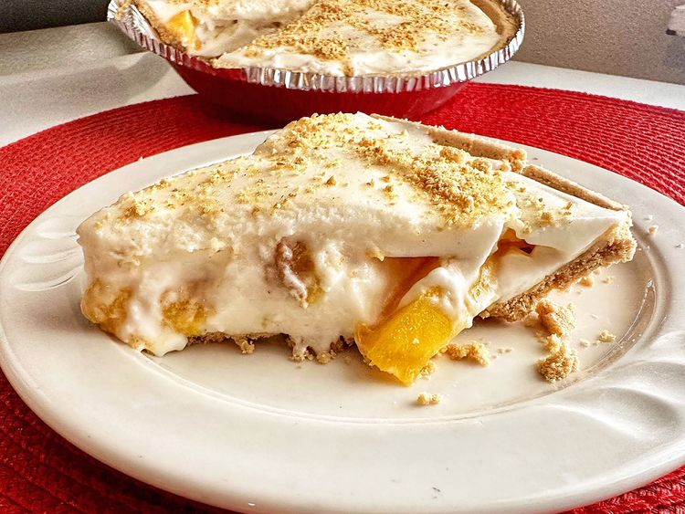

Fresh Peach Dessert
Home

Description
This fresh peach dessert recipe features soft layers of sweet, ripe peaches and marshmallow cream. We look forward to peach season every year so that we can have this dessert.
Ingredients
- 16 whole graham crackers, crushed
- ¾ cup butter, melted
- ½ cup white sugar
Steps
- Prepare crust: Combine graham cracker crumbs, melted butter, and sugar in a medium bowl. Mix until evenly moistened; set aside 1/4 cup for topping. Press remaining graham crumb mixture into the bottom of a 9x13-inch baking dish and set aside.
- Whip cream in a large bowl with an electric mixer until soft peaks form. Beat in sugar until stiff peaks form. Fold whipped cream into cooled marshmallow mixture until combined.
- Spread 1/2 of the marshmallow-cream mixture over crust. Arrange peaches on top, then cover with remaining marshmallow-cream mixture. Sprinkle with reserved graham crumb mixture. Refrigerate until serving.